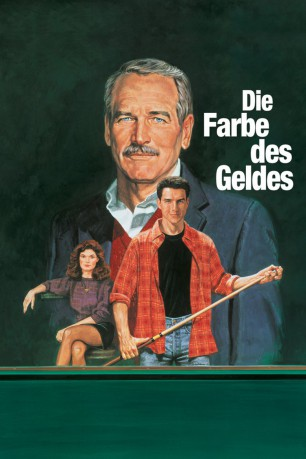

#2235 Die Farbe des Geldes
Alternativ: The Color of Money
Auszeichnungen: 1 Oscars gewonnen für 3 Oscars nominiert
 
 IMDB-Wertung: 7.0 / 10
IMDB-Wertung: 7.0 / 10  Metascore: 77
Metascore: 77 
"Fast" Eddie Felson hat sich vor 25 Jahren vom Billardtisch zurückgezogen und verdient sein Geld jetzt mit billigem Fusel. In dem jungen Vincent trifft er einen genialen, aber naiven Billardspieler. Eddie will ihm alle Tricks im Geschäft beibringen und tourt mit Vincent und dessen Freundin quer durch die USA. Schließlich werden er und Vincent harte Konkurrenten um die Nr.1 unter den Billardspielern.
Jahr: 1986
Dauer: 119 Minuten
FSK: 12
Land: USA Studio: Buena Vista PicturesTonspuren: DD2.0 - ,
Untertitel: Deutsch,
Auflösung: 1080p (1920x1040) Größe: 7813 MB
Genre: Drama, Sport
Regisseur:  Martin Scorsese
Martin Scorsese
Drehbuch: Walter Tevis, Richard Price
Soundtrack: Robbie Robertson
Darsteller:
 Paul Newman als Fast Eddie Felson
Paul Newman als Fast Eddie Felson Tom Cruise als Vincent Lauria
Tom Cruise als Vincent Lauria Mary Elizabeth Mastrantonio als Carmen
Mary Elizabeth Mastrantonio als Carmen- Helen Shaver als Janelle
 John Turturro als Julian
John Turturro als Julian Bill Cobbs als Orvis
Bill Cobbs als Orvis- Elizabeth Bracco als Diane at Bar
 Vito D'Ambrosio als Lou at Child World
Vito D'Ambrosio als Lou at Child World Ron Dean als Guy in Crowd
Ron Dean als Guy in Crowd Paul Herman als Player in Casino Bar
Paul Herman als Player in Casino Bar Iggy Pop als Skinny Player on Road
Iggy Pop als Skinny Player on Road- Richard Price als Guy Who Calls Dud
 Charles Scorsese als High Roller #1
Charles Scorsese als High Roller #1 Forest Whitaker als Amos
Forest Whitaker als Amos Bruce A. Young als Moselle
Bruce A. Young als Moselle Martin Scorsese als Opening Voiceover , uncredited
Martin Scorsese als Opening Voiceover , uncredited- Lenny Wilson als Extra , uncredited
- Robert Agins als Earl at Chalkie's
- Alvin Anastasia als Kennedy
- Randall Arney als Child World Customer #1
- Lisa Dodson als Child World Customer #2
- Donald A. Feeney als Referee #1
- Paul Geier als Two Brothers / Stranger Player
- Carey Goldenberg als Congratulating Spectator
- Joe Guastaferro als Chuck the Bartender
- Mark Jarvis als Guy at Janelle's
- Lawrence Linn als Congratulating Spectator
- Keith McCready als Grady Seasons
- Jimmy Mataya als Julian's Friend in Green Room
- Grady Mathews als Dud
- Carol Messing als Casino Bar Band Singer / Julian's Flirt
- Steve Mizerak als Duke, Eddie's First Opponent
- Rick Mohr als Congraulating Spectator
- Lloyd Moss als Narrator, Resorts International
- Michael Nash als Moselle's Opponent
- Mario Nieves als Latin Guy #3
- Miguel Nino als Latin Guy #1
- Andy Nolfo als Referee #2
- Ernest Perry Jr. als Eye Doctor
- Jerry Piller als Tom
- Juan Ramírez als Latin Guy #2
- Alex Ross als Bartender Who Bets
- Peter Saxe als Casino Bar Band Member
- Rodrick Selby als Congratulating Spectator
- Christina Sigel als Waitress
- Harold L. Simonsen als Chief Justice Tournament
- Fred Squillo als High Roller #2
- Brian Sunina als Casino Bar Band Member
- Wanda Christine als Casino Clerk
- Jim Widlowski als Casino Bar Band Member
Datei: X:\1986\Farbe des Geldes, Die (1986, FSK12, 1920x1040).mkv seit 22.10.2015
Festplatte: HD 1980-1986
 Es gibt insgesamt 50 Filme in der Gruppe '1986'
Es gibt insgesamt 50 Filme in der Gruppe '1986'